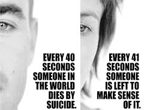

No! A big NO!
No matter what you are going through suicide is never the best way to end things. If you commit suicide because of whatever reason you have, I must say thatthat makes you a coward!There are people out there who woul kill to be where you are ,whether you believe it or not its true. There are people who have faced worse and are still facing worse than what you are going through yet they sport huge smiles on their faces.There are some people that when I hear what they have been through and who they are now I can't help but to marvel. If they have been able to make it in life what makes you think that you can't? You are much stronger than you think you are.
Besides if you should kill yourself it means that you are giving up.It means that you are giving your enemies the chance to Jubilate.
What about those who love and care for you? What are they supposed to do after you die? You may think that they are better off without you but you couldn't be more wrong.It is YOU that brightens up their day.If you should kill yorself, you will be doing them a great diservice.
God LOVES you and would not wish for harm to befall on you. Even the times when it seems that He isn,t there and that He does'nt care, He does and He has a reason why you are going through what you are going through.
Remember,NO CONDITION is PERMANENT!
Back